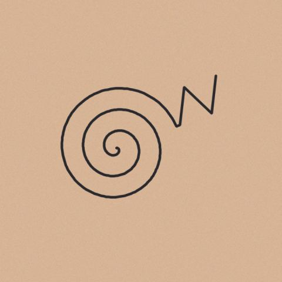

Placeholder
- When
- 2019-05
- Where
- Lima, Peru
- Artist
- TODO
TODO. Replace this entry; it exists so the page builds before the real photos arrive.
Synthetic placeholder image.
Each one started somewhere else: a photograph, a line on a plate, a textile. The animation runs from that source into the tattoo and back.

TODO. Replace this entry; it exists so the page builds before the real photos arrive.
Synthetic placeholder image.